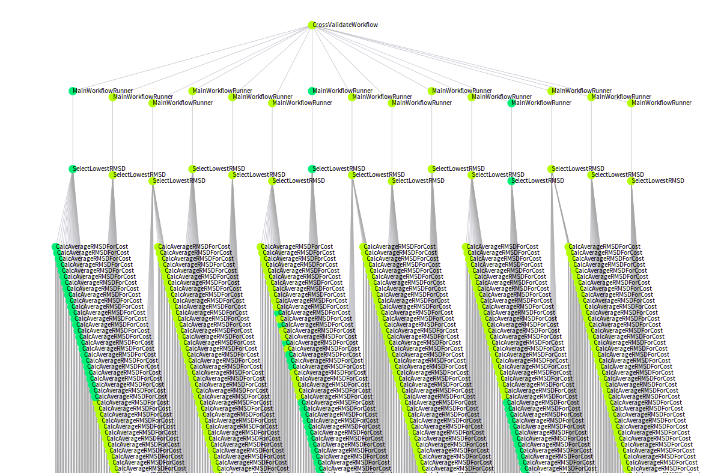

What is a scientific (batch) workflow?

Workflows and DAGs - Confusion about the concepts
Jörgen Brandt tweeted a comment that got me thinking again on something I’ve pondered a lot lately:
“A workflow is a DAG.” is really a weak definition. That’s like saying “A love letter is a sequence of characters.” representation ≠ meaning
Jörgen makes a good point. A Directed Acyclic Graph (DAG) does not by any means capture the full semantic content included in a computational workflow. I think Werner Gitt’s universal information model is highly relevant here, suggesting that information comes in at least five abstraction layers: statistics (signals, number of symbols), syntax (set of symbols, grammar), semantics (meaning), pragmatics (action), apobetics (purpose, result). A DAG seems to cover the syntax and semantics layers, leaving out three layers out of five.
Anyways, this also points to another fact: A lot of workflow users have a less than solid understanding of what workflows actually are. This leads to further confusion about how different types of workflow tools actually differ. As a small example, in many workflows-as-DAG discussions, there is often not even a common understanding of what the nodes and edges of the DAGs should represent. Are nodes processing components? tasks? task invocations? … or data inputs and outputs? Are the edges data? … or just dependencies?
It seems the concept of a scientific workflow might be just slightly more complicated than many realize. The ones who seem to truly understand the differences are the ones who tried building a workflow tool themselves (which is one good reason to not always refrain from trying to build your own tool, despite all the “reinventing the wheel” complaints :)).
Anyways, all this confusion is why I’m writing this post, hoping to clarify a little bit what scientific batch workflow systems are at their core, as far as my experience goes.
There are many ways to describe workflows, but specifically, I’m trying to define the smallest set of information that is always encoded in workflow definitions, across the most popular shell-based scientific batch workflows used in bioinformatics today.
Some context
Firstly, just some assumptions. In this context, what I mean with a scientific workflow, or scientific workflow system or tool is a set of shell commands producing outputs, where the commands are depending on each other in such a way that one command can only start after some other command has finished. This is how a lot of bioinformatics in high-throughput disciplines such as Next-Generation Sequencing is done, at least here at scilifelab or pharmb.io for example. This definition leaves out a lot of details though, so we will need to dig a little bit deeper below.
Secondly we also have to distinguish between the workflow definition, and concrete workflow invocations based on this definition. We will in this post mostly talk about the former one.
The smallest constituent of a workflow
One good way to define something, is generally by identifying its smallest common denominator constituent, so let’s do that.
Here again I think lies some confusion. When people think of the smallest common constituent in a workflow, it is common to hear suggestions such as the workflow “steps”, “processes”, “components”, “tasks” and similar. I argue that not all of these concepts are actually referring to the smallest common part of workflows.
I argue that the smallest common constituent of a scientific batch workflow definition is always unique program invocation definitions. That is, a definition specifying a specific program (with the version fixed) coupled with specific input data (e.g. specific files with specific content, and specific parameter values). Note that if anything changes in these constituting parts, even just a single bit of an input file, this will result in creating a new unique program invocation definition.
Unique program invocation definitions are mostly not what is referred to when talking about workflow steps, components or processes. It is, on the other hand, mostly what is meant with the term workflow task. Thus, that is the term we’ll use throughout this post.
Building on the smallest constituting part
Now that we have defined the smallest constituent of a workflow definition, it is much easier to try to identify various larger constructs that builds upon this concept.
It turns out that terms such as workflow step, workflow process and workflow component, typically are all variations of the same thing, namely templates for generating unique program invocation definitions. In other words, templates for generating tasks.
It turns out that such vastly different approaches to workflow design as GNU Make and its successors such as Snakemake , dataflow-centric tools like Nextflow or SciPipe , other push-based but non-dataflow-based tools and paradigms like Galaxy , Pachyderm or the Common Workflow Language (CWL) , or tools wrapping commandline execution in a functional language like Cuneiform , are all “just” variations on the same thing: A templating mechanism for concrete program invocation definitions, augmented with mechanisms for populating those templates.
And this last part - the mechanism for populating the templates - is where the inherent differences between all the mentioned tool approaches and concrete tools lie. In make-like tools, workflow steps use interpolation of file names to figure out concrete parameter values and input file names, to populate the task template. In dataflow-centric and other push-based systems, the templates are instead augmented with dataflow connections pointing to the source from which concrete values will be received once produced. In functional programming environments, the inputs to the templates are instead generated from the function call graph generated when calling a nested chain of functions depending on each other.
One more ingredient: Dependencies (in terms of data)
We have seen that most workflow tools are basically template-filling machinery, built upon different paradigms. In the template-filling machinery, we can identify one more common and re-occurring ingredient though: dependencies. All tools provide some way of specifying how tasks are dependent on other tasks.
In make-like systems, this is again done through file name patterns: Dependencies are specified via the input file name patterns, that are made concrete by interpolating file name patterns. In dataflow systems, channels between components provide a kind of “template” for dependencies: It provides a static connection which will serve as the mechanism to generate any concrete dependencies on upstream files for specific tasks. The other push-based systems work somewhat similarly to dataflow systems, except with a more restricted model of how the concrete dependencies are generated, as they typically lack dynamic scheduling (one component does not typically produce more than one output per set of inputs, for example, as could be the case for a dataflow-component). Finally, in functional languages, the function call graph itself is the dependency definition.
One caveat to look out for here: Some tools tend to define dependencies only in terms of the finishing of tasks, not on the availability of the outputs of that task, thus leaving out data flow specification from the workflow definition. This is often problematic as it requires task definitions to include internals of upstream tasks, in order to navigate to the right output files. I have blogged about it here , but in summary, it is generally recommendable to specify the dependencies in terms of data, not just task finish status.
And the sum of all this is?
Ok, so let’s conclude with a summary of this little foray into what defines a scientific batch workflow:
A scientific batch workflow is:
- A set of concrete tasks (program invocation definitions)
- With a specific program and version
- With specific input data (such as files and parameter values)
- A set of dependencies between the inputs and outputs of the aforementioned tasks
That’s it, as far as I can see and understand. With this definition in mind, it is - as said - much more interesting to go out and study how different workflow tools are representing this information, and how they make it easier for the user to generate the concrete set of tasks (which can often be a very large number), from some more compact definition.
So what about the DAGs?
I think the question of how to best represent workflows as DAGs is a bigger topic that needs a separate post. But at least we can make some notes based on the clarifications made here:
- There are multiple ways of representing workflows as DAGs
- Nodes can mean anything between tasks, concrete task invocations (concrete events in time), or some kind of task template
- Edges can mean either data, or just dependency on task finish in general
- The DAGs representing task templates (processes, steps or the like)
will be very different from DAGs representing tasks, or even worse,
concrete task invocations.
- The DAGs representing tasks or task invocations are less likely to be very intelligible, as they can easily contain thousands of nodes.
So, if coming back to Jörgen’s tweet , I think it is fair to say that “a workflow is [just] a DAG” is a bit of a over-simplification. An over-simplification in more than one way, it seems :)
- Update (Dec 7, 2017, 14:52 CET): Clarifications in the introduction
- Update (Dec 7, 2017, 15:07 CET): Fixed tons of typos, sorry
- Update (May 31, 2018, 20:53 CET): Vertices → Edges (Thanks Olivier Mathieu!)